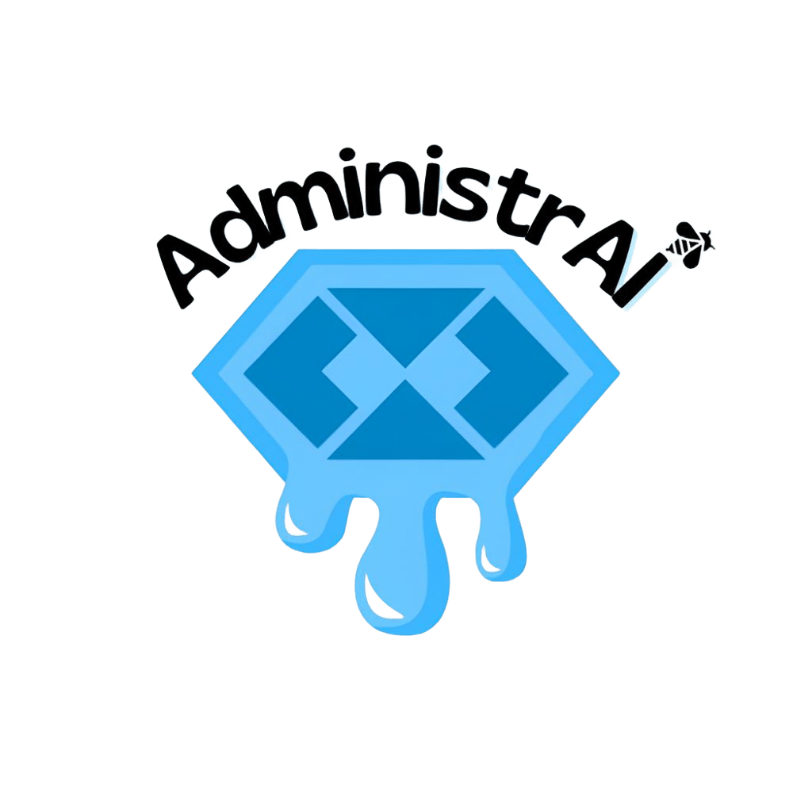

Quiz - Descubra seu Perfil Financeiro
Responda e descubra se você é conservador, moderado ou arrojado!
0%
1. Qual é o seu nível de conhecimento sobre investimentos?
A) Nenhum ou quase nenhum, conheço só poupança.
B) Sei o básico, já ouvi falar em CDB, Tesouro, ações.
C) Tenho experiência, já investi em diferentes produtos.
2. O que você faria se seus investimentos caíssem 10% em um mês?
A) Venderia imediatamente para evitar perder mais.
B) Esperaria para ver se o mercado se recupera.
C) Aproveitaria para comprar mais, já que pode ser oportunidade.
3. Qual é o principal objetivo dos seus investimentos?
A) Segurança, preservar meu dinheiro.
B) Crescimento moderado, equilibrando segurança e risco.
C) Acumular patrimônio no longo prazo, mesmo com volatilidade.
4. Por quanto tempo você pretende manter seus investimentos antes de precisar do dinheiro?
A) Menos de 1 ano.
B) Entre 1 e 5 anos.
C) Mais de 5 anos.
5. Qual seria a sua reação se seu investimento rendesse menos que a poupança por 6 meses?
A) Frustração total, retiraria o dinheiro.
B) Ficaria incomodado, mas manteria o investimento por mais tempo.
C) Tranquilo, sei que investimentos variam no curto prazo.
6. Quanto da sua renda mensal você estaria disposto a investir em aplicações de maior risco?
A) 0 a 10%
B) 10% a 30%
C) Mais de 30%
7. Como você se informa sobre o mercado financeiro?
A) Não acompanho nada ou só notícias básicas.
B) Leio conteúdos em blogs, redes sociais e consulto especialistas.
C) Estudo com frequência, acompanho indicadores, relatórios e tendências.
Próximo